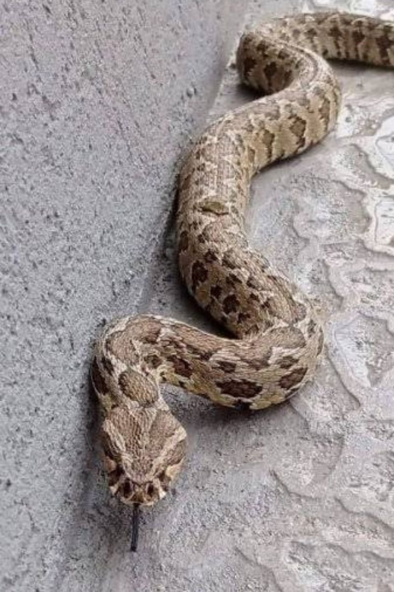
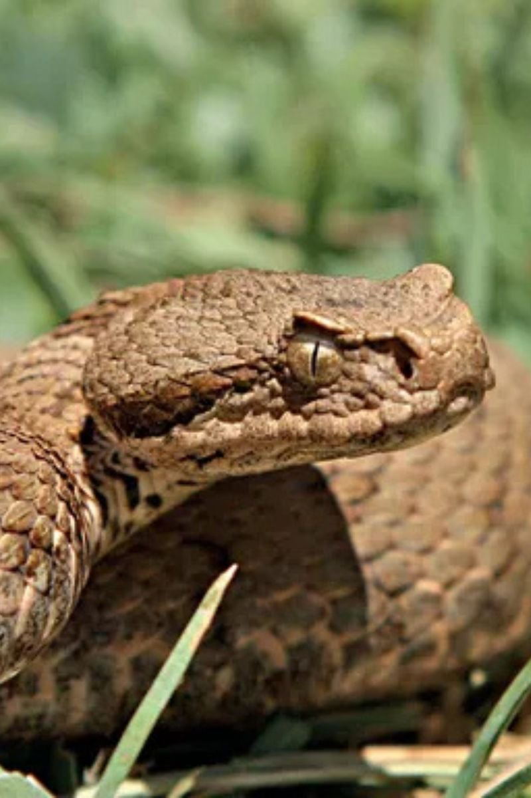
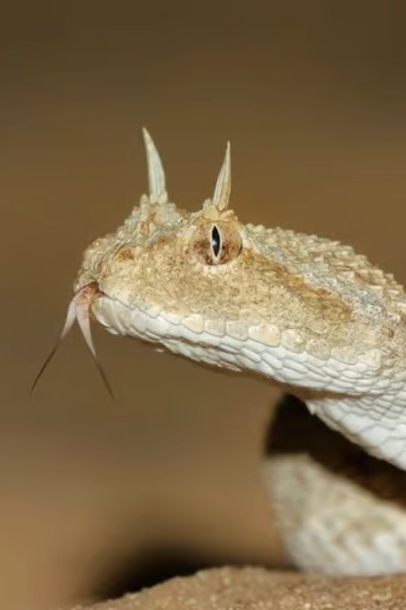
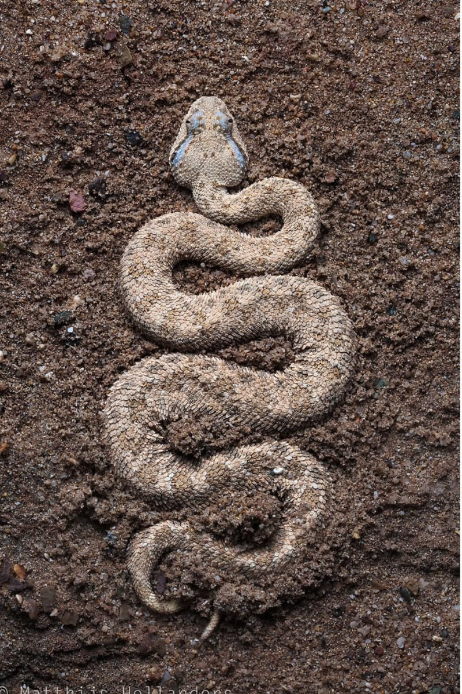
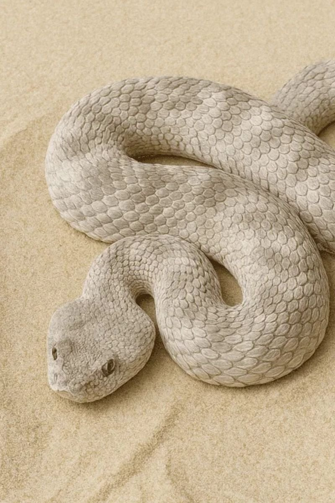
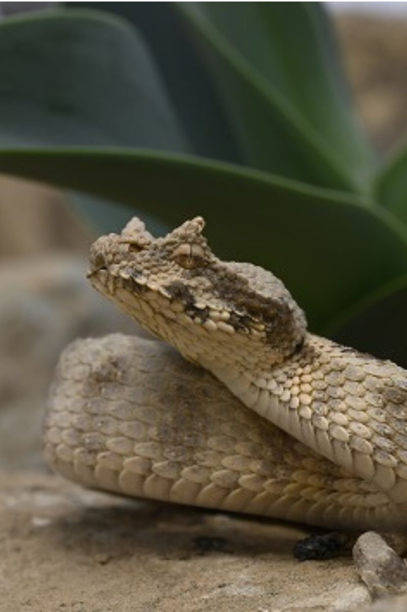
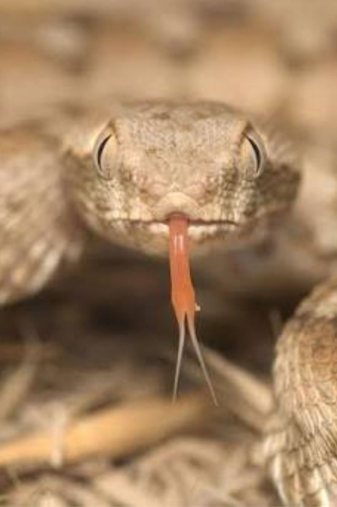
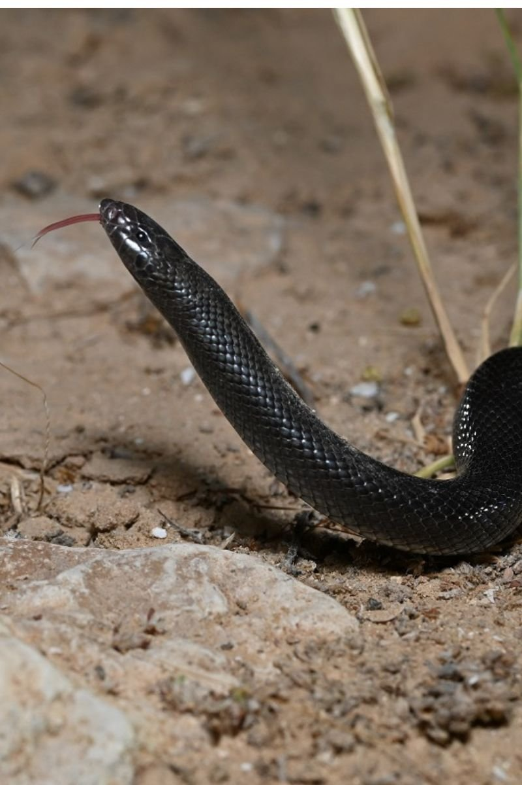
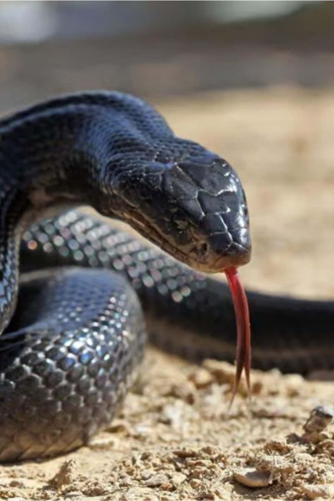

בישראל חיים תשעה מיני נחשים ארסיים, הפרושים בין הרי הצפון ועד לדיונות המדבר בדרום. ריכזתי כאן את כל מה שצריך לדעת על כל מין מתוך ניסיוני בשטח: אורך, תזונה, אזורי תפוצה מדויקים ורמת סיכון. כלל הזהב בכל המקרים זהה: אל תתקרבו, אל תיגעו, אל תנסו ללכוד — תנו להם מרחב להתרחק בבטחה.

צפע ארץ ישראלי
Daboia palaestinaeהנחש הארסי הנפוץ ביותר בישראל, והאחראי לרוב ההכשות הארסיות באזור. מכונה מקומית גם 'נחש הבקלאווה' בשל תבנית המעוינים שעל גבו. אין להתקרב אליו או לנסות ללכוד אותו גם אם הוא נראה רגוע, שכן הוא עלול להכיש במהירות רבה.
- אורךעד 140 ס״מ
- תזונהעכברים, ציפורים, לטאות ולעיתים נחשים אחרים
- תפוצהמבאר שבע ועד גבול לבנון
האם הוא מסוכן? כן, זהו מין ארסי. אם נתקלתם בו אל תתקרבו, אל תנסו לגעת בו או ללכוד אותו, ותנו לו להמשיך בדרכו בבטחה.

צפע החרמון
Montivipera bornmuelleriנחש ארסי נדיר מאוד, ובישראל הוא חי רק באזור אחד: החלק הגבוה של הר החרמון. עמיד לקור עז ופעיל בתקופה קצרה בשנה לאחר הפשרת השלגים.
- אורךעד 80 ס״מ
- תזונהעכברים ולטאות
- תפוצההאזור הגבוה של החרמון בלבד
האם הוא מסוכן? כן, זהו מין ארסי. אם נתקלתם בו אל תתקרבו, אל תנסו לגעת בו או ללכוד אותו, ותנו לו להמשיך בדרכו בבטחה.

עכן חרטומים
Cerastes cerastesמזוהה בשני קרניים קטנות מעל העיניים, ונע בתנועת דישדוש צדדית אופיינית מעל החול. טומן עצמו חלקית בחול ואורב לטרפו בסבלנות רבה.
- אורךעד 80 ס״מ
- תזונהעכברים ולטאות
- תפוצההאזורים החוליים שבצפון-מערב הנגב
האם הוא מסוכן? כן, זהו מין ארסי. אם נתקלתם בו אל תתקרבו, אל תנסו לגעת בו או ללכוד אותו, ותנו לו להמשיך בדרכו בבטחה.

עכן גדול
Cerastes gasperettiiגדול מעכן החרטומים ולרוב ללא קרניים, חי בדיונות ובוואדיות מדבריים בדרום. אם נתקלתם בו, אל תתקרבו, אל תנסו לגעת בו או ללכוד אותו, ותנו לו להמשיך בדרכו בבטחה.
- אורךעד 90 ס״מ
- תזונהעכברים ולטאות, ולעיתים גם ציפורים
- תפוצהאזורים חוליים והערבה
האם הוא מסוכן? כן, זהו מין ארסי. אם נתקלתם בו אל תתקרבו, אל תנסו לגעת בו או ללכוד אותו, ותנו לו להמשיך בדרכו בבטחה.

עכן קטן
Cerastes viperaהצפע הארסי הקטן ביותר בישראל, קובר את גופו כולו בחול הרך ומשאיר רק את עיניו, וצד במארב. למרות גודלו הקטן זהו נחש ארסי שיש להתרחק ממנו.
- אורךעד 30 ס״מ
- תזונהבעיקר לטאות
- תפוצההאזורים החוליים שבצפון-מערב הנגב
האם הוא מסוכן? כן, זהו מין ארסי. אם נתקלתם בו אל תתקרבו, אל תנסו לגעת בו או ללכוד אותו, ותנו לו להמשיך בדרכו בבטחה.

שפיפון
Pseudocerastes fieldiנחש ארסי המותאם במיוחד לחיים במדבר. מכונה גם 'הקוברה המזויפת' כי הוא מנפח את צווארו כתחבולת הגנה. הצעירים ניזונים בעיקר מלטאות, ואילו הבוגרים ניזונים בעיקר מעכברים ומציפורים.
- אורךעד 90 ס״מ (בדרך כלל קצר יותר)
- תזונהלטאות, עכברים וציפורים
- תפוצהמרכז הנגב ודרום-מערב הנגב
האם הוא מסוכן? כן, זהו מין ארסי. אם נתקלתם בו אל תתקרבו, אל תנסו לגעת בו או ללכוד אותו, ותנו לו להמשיך בדרכו בבטחה.

אפעה
Echis coloratusאחד הנחשים הארסיים הנפוצים באזורים המדבריים. משפשף קשקשים צדדיים זה בזה ומפיק קול 'מסור' מזהיר לפני ההכשה. מהמסוכנים באזורים סלעיים יבשים למרות גודלו הקטן.
- אורךעד 90 ס״מ
- תזונהציפורים, לטאות, עכברים, חרקים וקרפדות
- תפוצההרי אילת, הנגב, ים המלח, מדבר יהודה ובקעת הירדן
האם הוא מסוכן? כן, זהו מין ארסי. אם נתקלתם בו אל תתקרבו, אל תנסו לגעת בו או ללכוד אותו, ותנו לו להמשיך בדרכו בבטחה.

שרף עין גדי – צפעון שחור
Atractaspis engaddensisחי באזורים מדבריים ויוצא לפעילות אחרי רדת החשכה. בעל יכולת להכיש גם לאחור — ולכן אחיזה מאחורי הראש (השיטה המקובלת בנחשים אחרים) היא טעות מסוכנת מאוד ונפוצה. אין לנסות להרים אותו או להחזיק אותו ביד.
- אורךעד 85 ס״מ
- תזונהבעיקר לטאות
- תפוצהמרכז הנגב, הערבה, ים המלח, מדבר יהודה ובקעת הירדן
האם הוא מסוכן? כן, זהו מין ארסי. אם נתקלתם בו אל תתקרבו, אל תנסו לגעת בו או ללכוד אותו, ותנו לו להמשיך בדרכו בבטחה.

פתן שחור
Walterinnesia aegyptiaמהנחשים הארסיים המסוכנים בישראל, וצבעו השחור המבריק מזהה אותו בקלות. למרות מראהו המרשים הוא אינו תוקף בני אדם ללא סיבה, וברוב המקרים יעדיף להימנע ממפגש. רעלו נוירוטוקסי.
- אורךעד 125 ס״מ
- תזונהקרפדות ולטאות, ולעיתים גם פגרים
- תפוצההנגב, הערבה, בקעת ים המלח ומזרח הרי ירושלים
האם הוא מסוכן? כן, זהו מין ארסי. אם נתקלתם בו אל תתקרבו, אל תנסו לגעת בו או ללכוד אותו, ותנו לו להמשיך בדרכו בבטחה.
נחשים הם חלק חשוב ממערכת הטבע ותורמים לוויסות אוכלוסיות מכרסמים וחרקים. ידע וכיבוד מרחב המחיה של חיות הבר הם הדרך הטובה ביותר לשמור על בטיחות האדם ועל הטבע כאחד.
הבהרה רפואית חשובה: תוכן זה מיועד לחינוך שטח בלבד ואינו תחליף לייעוץ רפואי. במקרה של הכשה פנו מיידית לעזרה רפואית ואל תסתמכו על טיפול ביתי כלשהו.